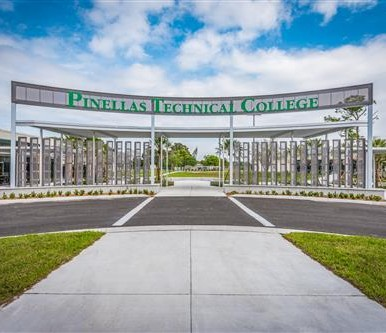

About Me
Web Development Student • Guitarist • Gamer • Creator
My name is Thomas Ballesteros, and I'm a Web Development student. I was born in Colombia and traveled to the United States a year ago looking for new opportunities. I've always been interested in the world of programming; I find the ability to create and birng to life anything you can imagine fascinating. Now, I'm trying to learn and improve my HTML and CSS skills so I can become a great developer. I dream of graduating, becoming a professional, and working for some important, large company creating their websites, having the life of my dreams, and being recognized. Here's a little bit of what you should know about me. Enjoy!
🎓 Education
Currently studying Web Development at Pinellas Technical College. Started in 2025.
🛠️ Skills
- HTML
- CSS
- Creative Content Building
📈 Journey
I began learning web development this year and I'm proud of how far I've come. Every challenge I overcome shows me that I can break my own limits and keep growing.
🎯 Goals
- Earn the HTML/CSS Coding Specialist Certification
- Build a creative and professional portfolio
- Help others bring their ideas to life through web design
❤️ Passions
I love turning ideas into content—making them fun, useful, and creative tools for others. Helping people express themselves through websites is what drives me.
🎸 Hobbies
- Playing guitar
- Video games
- Sports